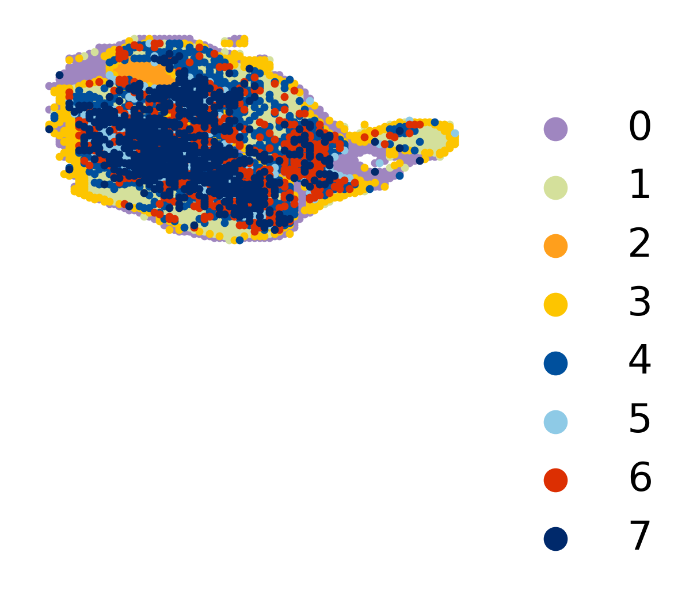
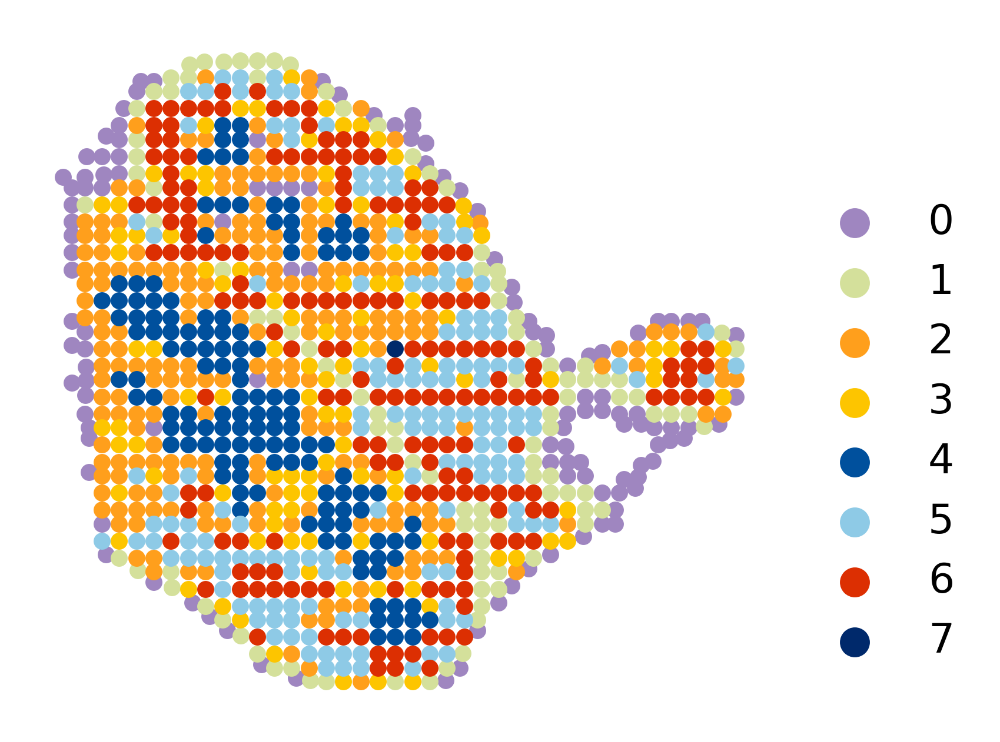
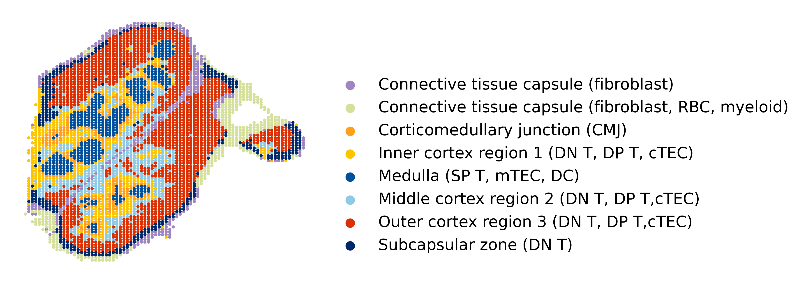
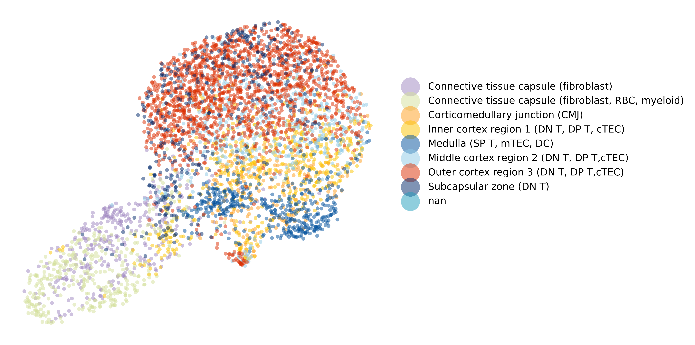
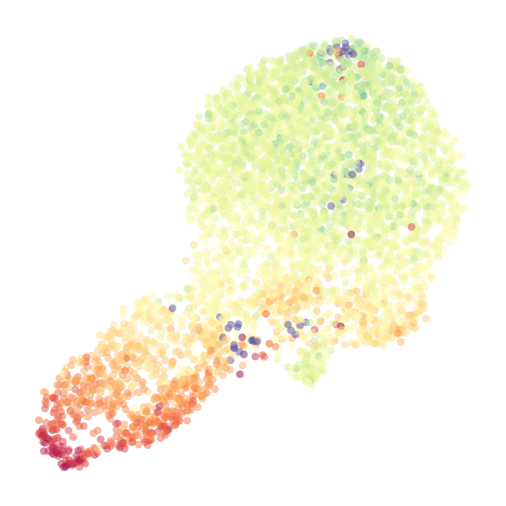

CORAL Tutorial — Multi-scale Multi-modal Integration of Spatial Omics¶
March 2026
Siyu He
Overview¶
CORAL is a deep generative model that integrates spatial omics data across multiple modalities and resolutions. CORAL combines high-resolution spatial protein data (e.g., CODEX) with lower-resolution spatial transcriptomics data (e.g., Visium) to produce a unified latent representation and downstream analysis.
What this tutorial covers¶
Loading and visualizing multi-modal spatial omics data
Preparing data for CORAL (preprocessing and graph construction)
Training the CORAL model
Running inference to obtain integrated embeddings
Evaluating CORAL embeddings against ground truth annotations
Generating enriched low-resolution expression profiles
Dataset¶
We use a mouse thymus dataset with:
High-resolution (CODEX): 4,697 cells × 51 proteins
Low-resolution (Visium): ~200 spots × 3,036 genes
Ground truth: Manual cell-type annotations
Runtime¶
This tutorial takes approximately 15 minutes on a GPU-equipped machine.
Prerequisites¶
Installation:
pip install git+https://github.com/zou-group/CORAL
Or install from source:
git clone https://github.com/shsiyu/CORAL.git
cd CORAL
pip install -e .
Dependencies: scanpy, anndata, torch, torch_geometric, scikit-learn, umap-learn, scipy, matplotlib, seaborn
Hardware: GPU recommended (NVIDIA GPU with CUDA support). CPU execution is supported but significantly slower.
Step 1: Import Libraries¶
[1]:
%load_ext autoreload
%autoreload 2
import numpy as np
import pandas as pd
import matplotlib.pyplot as plt
import scanpy as sc
import anndata
import torch
from sklearn.metrics import mutual_info_score
import warnings
warnings.filterwarnings("ignore", category=SyntaxWarning)
[2]:
import coral
Step 2: Download and Load Data¶
Download the mouse thymus dataset from Figshare (doi: 10.6084/m9.figshare.30676556). The download is skipped automatically if the files already exist.
[3]:
import urllib.request
import os
data_dir = "Mouse_thymus_data"
os.makedirs(data_dir, exist_ok=True)
files = {
"adata_thymus1_annotation.h5ad": "https://ndownloader.figshare.com/files/59752970",
"adata_ADT.h5ad": "https://ndownloader.figshare.com/files/59752967",
"adata_RNA_low.h5ad": "https://ndownloader.figshare.com/files/59752973",
}
for filename, url in files.items():
filepath = os.path.join(data_dir, filename)
if os.path.exists(filepath):
print(f"Already exists: {filepath}")
else:
print(f"Downloading {filename}...")
urllib.request.urlretrieve(url, filepath)
print(f" Saved to {filepath}")
Downloading adata_thymus1_annotation.h5ad...
Saved to Mouse_thymus_data/adata_thymus1_annotation.h5ad
Downloading adata_ADT.h5ad...
Saved to Mouse_thymus_data/adata_ADT.h5ad
Downloading adata_RNA_low.h5ad...
Saved to Mouse_thymus_data/adata_RNA_low.h5ad
[4]:
# Load the three h5ad files
ground_truth_adata = sc.read_h5ad('Mouse_thymus_data/adata_thymus1_annotation.h5ad')
hires_adata = sc.read_h5ad('Mouse_thymus_data/adata_ADT.h5ad')
lowres_adata = sc.read_h5ad('Mouse_thymus_data/adata_RNA_low.h5ad')
hires_adata = hires_adata[hires_adata.obs_names, :]
hires_adata.obs['Annotation'] = ground_truth_adata.obs['Annotation'].astype(str)
lowres_adata = lowres_adata[lowres_adata.obs_names, :]
/tmp/ipykernel_13136/3957001530.py:7: ImplicitModificationWarning: Trying to modify attribute `.obs` of view, initializing view as actual.
hires_adata.obs['Annotation'] = ground_truth_adata.obs['Annotation'].astype(str)
Step 3: (Optional) Visualize Input Data¶
Before running CORAL, inspect the spatial organization of both modalities. The high-resolution data (CODEX) captures protein expression at single-cell resolution, while the low-resolution data (Visium) measures transcriptomes at a larger spatial scale.
Leiden clustering is used for initial unsupervised visualization. Adjust the res parameter to control cluster granularity.
[15]:
coral.utils.plot_spatial(
hires_adata,
res=0.7,
use_rep_for_cluster='X_pca',
to_plot_var='cluster',
need_lognormed=True,
size=1,
figsize=(3.5, 3),
legd=True,
invert_yaxis=True,
axis_=False,
color_list=['#9f86c0', '#d4e09b', '#ff9f1c', '#fdc500', '#00509d', '#8ecae6',
'#dc2f02', '#00296b', '#219ebc', '#126782', '#023047', '#ffc9b9',
'#affc41', 'k', 'y', 'g'])
/oak/stanford/groups/quake/siyu/coral_revision2/CORAL/coral/utils/visualization.py:134: UserWarning: Tight layout not applied. The bottom and top margins cannot be made large enough to accommodate all Axes decorations.
plt.tight_layout()

[6]:
coral.utils.plot_spatial(
lowres_adata,
res=1.6235,
use_rep_for_cluster='X_pca',
to_plot_var='cluster',
need_lognormed=True,
size=10,
figsize=(3.5, 2.7),
legd=True,
invert_yaxis=True,
axis_=False,
legend_fontsize=10,
legend_markerscale=2,
color_list=['#9f86c0', '#d4e09b', '#ff9f1c', '#fdc500', '#00509d', '#8ecae6',
'#dc2f02', '#00296b', '#219ebc', '#126782', '#023047', '#ffc9b9',
'#affc41', 'k', 'y', 'g'])

Step 4: (Optional) Visualize Ground Truth Annotations¶
The ground truth annotations provide manually curated cell-type labels for the high-resolution data. We visualize these in spatial coordinates and as a UMAP embedding to understand the expected tissue organization.
[7]:
coral.utils.plot_spatial(
ground_truth_adata,
res=0.7,
use_rep_for_cluster=None,
to_plot_var='Annotation',
need_lognormed=False,
size=1,
figsize=(3.5, 3),
legd=True,
invert_yaxis=True,
axis_=False,
color_list=['#9f86c0', '#d4e09b', '#ff9f1c', '#fdc500', '#00509d', '#8ecae6',
'#dc2f02', '#00296b', '#219ebc', '#126782', '#023047', '#ffc9b9',
'#affc41', 'k', 'y', 'g'])
/oak/stanford/groups/quake/siyu/coral_revision2/CORAL/coral/utils/visualization.py:134: UserWarning: Tight layout not applied. The left and right margins cannot be made large enough to accommodate all Axes decorations.
plt.tight_layout()

[8]:
coral.utils.plot_umap(
hires_adata,
res=0.7,
use_rep_for_cluster='X_pca',
to_plot_var='Annotation',
need_lognormed=True,
size=15,
figsize=(10, 5),
legd=True,
invert_yaxis=True,
axis_=False,
color_list=['#9f86c0', '#d4e09b', '#ff9f1c', '#fdc500', '#00509d', '#8ecae6',
'#dc2f02', '#00296b', '#219ebc', '#126782', '#023047', '#ffc9b9',
'#affc41', 'k', 'y', 'g'])

[9]:
coral.utils.plot_umap_gene(
hires_adata,
res=0.7,
use_rep_for_cluster='X_pca',
to_plot_gene='Mouse-CD19',
need_lognormed=True,
size=10,
figsize=(3, 3),
legd=True,
invert_yaxis=True,
axis_=False,
vmin=0,
vmax=6)
/oak/stanford/groups/quake/siyu/coral_revision2/CORAL/coral/utils/visualization.py:356: UserWarning: No artists with labels found to put in legend. Note that artists whose label start with an underscore are ignored when legend() is called with no argument.
ax.legend(

Step 5: Assign Cell Types to High-Resolution Data¶
CORAL requires cell-type labels for the high-resolution data, used as conditioning variables during training. Here we use Leiden clustering as a proxy for cell types.
Key parameters:
res: Leiden clustering resolution. Higher values produce more clusters. Adjust based on expected number of cell types in your data.use_rep_for_cluster: Representation used for computing the neighbor graph (e.g.,'X_pca').
Note: If manual annotations are available, use those instead of unsupervised clusters for better results.
[10]:
hires_adata = coral.utils.add_cluster(
hires_adata,
res=0.7,
use_rep_for_cluster='X_pca',
need_lognormed=True)
hires_adata.obs['cell_type'] = hires_adata.obs['cluster']
Step 6: Prepare Data for CORAL¶
This step preprocesses the input data and constructs local spatial subgraphs for training:
``preprocess_data`` aligns high-resolution cells to their nearest low-resolution spots, concatenates expression matrices, and computes one-hot encoded cell-type vectors.
``prepare_local_subgraphs`` builds k-nearest-neighbor spatial graphs where each subgraph is centered on a high-resolution cell and its local neighborhood.
Key parameters:
n_neighbors: Number of spatial neighbors for graph construction (default: 40). Increase for denser tissues; decrease for sparser ones.
[11]:
combined_expr, hires_coords, one_hot_cell_types, spot_indices, lowres_expr = coral.utils.preprocess_data(
lowres_adata, hires_adata)
dataloader = coral.utils.prepare_local_subgraphs(
combined_expr, hires_coords, one_hot_cell_types,
spot_indices, lowres_expr, n_neighbors=40)
/oak/stanford/groups/quake/siyu/coral_revision2/CORAL/coral/utils/preprocessing.py:130: UserWarning: 'data.DataLoader' is deprecated, use 'loader.DataLoader' instead
dataloader = DataLoader(data_list, batch_size=8, shuffle=True)
Step 7: Create CORAL Model¶
Initialize the CORAL model architecture. The model consists of:
Separate encoders for high-resolution (protein) and low-resolution (RNA) modalities
Graph Attention Network (GAT) layers for spatial context encoding
Cross-attention between modalities
Variational inference with latent variables z (shared embedding) and v (nuisance)
Deconvolution layer for cell-type aware expression reconstruction
Key parameters:
latent_dim: Dimension of the shared latent space (default: 64). Larger values capture more variation.hidden_channels: Hidden layer width in GAT (default: 128).v_dim: Dimension of the nuisance variable v (default: 1).
[12]:
device = torch.device('cuda' if torch.cuda.is_available() else 'cpu')
if torch.cuda.is_available():
print("GPU is available.")
gpu_count = torch.cuda.device_count()
print(f"Number of GPUs available: {gpu_count}")
for i in range(gpu_count):
print(f"GPU {i}: {torch.cuda.get_device_name(i)}")
else:
print("GPU is not available. Training will be slower.")
GPU is available.
Number of GPUs available: 1
GPU 0: NVIDIA L40S
[13]:
model, optimizer = coral.model.create_model(
lowres_dim=lowres_adata.shape[1],
hires_dim=hires_adata.shape[1],
lowres_size=lowres_adata.shape[0],
hires_size=hires_adata.shape[0],
cell_type_dim=one_hot_cell_types.shape[1],
latent_dim=64,
hidden_channels=128,
v_dim=1)
model.to(device)
[13]:
CORAL_model(
(encoder_visium): Sequential(
(0): Linear(in_features=3036, out_features=128, bias=True)
(1): ReLU()
(2): Linear(in_features=128, out_features=128, bias=True)
)
(encoder_codex): Sequential(
(0): Linear(in_features=51, out_features=128, bias=True)
(1): ReLU()
(2): Linear(in_features=128, out_features=128, bias=True)
)
(encoder): Sequential(
(0): Linear(in_features=3087, out_features=128, bias=True)
(1): ReLU()
(2): Linear(in_features=128, out_features=128, bias=True)
)
(zi_prior): Sequential(
(0): Linear(in_features=9, out_features=128, bias=True)
(1): ReLU()
(2): Linear(in_features=128, out_features=128, bias=True)
)
(cross_attention): CrossAttentionLayer(
(query_proj): Linear(in_features=64, out_features=64, bias=True)
(key_proj): Linear(in_features=64, out_features=64, bias=True)
(value_proj): Linear(in_features=64, out_features=64, bias=True)
(softmax): Softmax(dim=-1)
)
(deconv): DeconvolutionLayer(
(fc1): Sequential(
(0): Linear(in_features=3036, out_features=256, bias=True)
(1): ReLU()
)
(fc2): Sequential(
(0): Linear(in_features=264, out_features=64, bias=True)
(1): ReLU()
)
(fc3): Sequential(
(0): Linear(in_features=72, out_features=3028, bias=True)
)
)
(gat1): GATConv(64, 128, heads=4)
(gat2): GATConv(512, 64, heads=1)
(hidden_decoder): Sequential(
(0): Linear(in_features=64, out_features=128, bias=True)
(1): ReLU()
)
(visium_scale_decoder): Sequential(
(0): Linear(in_features=128, out_features=3028, bias=True)
(1): Softmax(dim=-1)
)
(codex_scale_decoder): Sequential(
(0): Linear(in_features=128, out_features=51, bias=True)
(1): Softmax(dim=-1)
)
(cell_type_decoder): Linear(in_features=64, out_features=8, bias=True)
(v_layer): Sequential(
(0): Linear(in_features=3151, out_features=2, bias=True)
)
(layer_norm): LayerNorm((512,), eps=1e-05, elementwise_affine=True)
)
Step 8: Train the Model¶
Train the CORAL model using the prepared dataloader. The loss function includes:
Reconstruction losses (Negative Binomial for RNA, Gamma for protein)
KL divergence for latent variables z and v
Contrastive loss for cross-modal alignment
Graph Laplacian regularization for spatial smoothness
Key parameters:
epochs: Number of training epochs (100 is sufficient for this dataset). Larger or more complex datasets may need 200–300 epochs.
Training progress is printed as per-epoch loss values. Expect the loss to decrease and stabilize.
[14]:
coral.trainer.train_model(model, optimizer, dataloader, epochs=100, device=device)
Epoch 0, Loss: 837651.3173894557
Epoch 1, Loss: 770657.4944196428
Epoch 2, Loss: 769074.0282738095
Epoch 3, Loss: 765342.6061862245
Epoch 4, Loss: 755766.4561011905
Epoch 5, Loss: 751659.2102465987
Epoch 6, Loss: 750088.2537733844
Epoch 7, Loss: 748078.0375212585
Epoch 8, Loss: 742152.8418367347
Epoch 9, Loss: 738484.6672512755
Epoch 10, Loss: 736354.2802933673
Epoch 11, Loss: 735619.7055697279
Epoch 12, Loss: 733923.2660501701
Epoch 13, Loss: 733304.7290072279
Epoch 14, Loss: 730967.2822066327
Epoch 15, Loss: 730058.9565263606
Epoch 16, Loss: 729182.6507759354
Epoch 17, Loss: 728578.0754676871
Epoch 18, Loss: 727427.7825255102
Epoch 19, Loss: 725707.020567602
Epoch 20, Loss: 725068.0844494047
Epoch 21, Loss: 725091.0311968537
Epoch 22, Loss: 723774.2189094388
Epoch 23, Loss: 722808.5348639456
Epoch 24, Loss: 722182.6932929421
Epoch 25, Loss: 721472.450042517
Epoch 26, Loss: 721077.0993835034
Epoch 27, Loss: 719746.9280931122
Epoch 28, Loss: 719385.284332483
Epoch 29, Loss: 718800.8806866497
Epoch 30, Loss: 718250.7728528911
Epoch 31, Loss: 717857.0820046769
Epoch 32, Loss: 717263.550170068
Epoch 33, Loss: 716127.4137436225
Epoch 34, Loss: 715665.353635204
Epoch 35, Loss: 715296.1294642857
Epoch 36, Loss: 715073.0704187925
Epoch 37, Loss: 714604.4621598639
Epoch 38, Loss: 714204.3559204933
Epoch 39, Loss: 713768.4832057824
Epoch 40, Loss: 713428.5529336735
Epoch 41, Loss: 712582.3880739796
Epoch 42, Loss: 712728.3959396258
Epoch 43, Loss: 711957.9977678572
Epoch 44, Loss: 711728.923735119
Epoch 45, Loss: 711906.1103847789
Epoch 46, Loss: 710918.3492772109
Epoch 47, Loss: 710436.0224277211
Epoch 48, Loss: 710349.0060055272
Epoch 49, Loss: 710116.4960671769
Epoch 50, Loss: 709586.7275191327
Epoch 51, Loss: 708492.8602519133
Epoch 52, Loss: 709245.4219812925
Epoch 53, Loss: 709081.9255952381
Epoch 54, Loss: 708311.746704932
Epoch 55, Loss: 708089.6071428572
Epoch 56, Loss: 707747.8192495748
Epoch 57, Loss: 708116.7383078231
Epoch 58, Loss: 707347.7757227891
Epoch 59, Loss: 706720.2042942176
Epoch 60, Loss: 706063.208067602
Epoch 61, Loss: 706393.9973958334
Epoch 62, Loss: 706382.3742559524
---------------------------------------------------------------------------
KeyboardInterrupt Traceback (most recent call last)
Cell In[14], line 1
----> 1 coral.trainer.train_model(model, optimizer, dataloader, epochs=100, device=device)
File /oak/stanford/groups/quake/siyu/coral_revision2/CORAL/coral/trainer/train.py:139, in train_model(model, optimizer, dataloader, epochs, device, prot_idx, gene_idx)
135 visium_true, codex_true = batch.visium_spot_exp, batch.x[:, model.visium_dim:]
136 # Compute edge weights for this specific batch
137 #edge_weights = spatial_attention(edge_index, spatial_coords)
--> 139 output = model(batch, device)
141 codex_true = codex_true[center_cell]
142 cell_type = cell_type[center_cell]
File ~/.local/lib/python3.12/site-packages/torch/nn/modules/module.py:1739, in Module._wrapped_call_impl(self, *args, **kwargs)
1737 return self._compiled_call_impl(*args, **kwargs) # type: ignore[misc]
1738 else:
-> 1739 return self._call_impl(*args, **kwargs)
File ~/.local/lib/python3.12/site-packages/torch/nn/modules/module.py:1750, in Module._call_impl(self, *args, **kwargs)
1745 # If we don't have any hooks, we want to skip the rest of the logic in
1746 # this function, and just call forward.
1747 if not (self._backward_hooks or self._backward_pre_hooks or self._forward_hooks or self._forward_pre_hooks
1748 or _global_backward_pre_hooks or _global_backward_hooks
1749 or _global_forward_hooks or _global_forward_pre_hooks):
-> 1750 return forward_call(*args, **kwargs)
1752 result = None
1753 called_always_called_hooks = set()
File /oak/stanford/groups/quake/siyu/coral_revision2/CORAL/coral/model/model_core.py:256, in CORAL_model.forward(self, batch, device)
253 x_combined = torch.cat((q_xi, codex_x), dim=1)
254 x_combined = torch.log1p(x_combined)
--> 256 z, z_mu, z_logvar = self.encode(x_combined, cell_type, edge_index)
258 v, v_m, v_logvar = self.infer_v(x_combined, z, cell_type)
260 # Infer p_z given v
File /oak/stanford/groups/quake/siyu/coral_revision2/CORAL/coral/model/model_core.py:172, in CORAL_model.encode(self, x_combined, cell_type, edge_index)
168 visium_mu = torch.relu(visium_mu)
169 visium_mu, _ = self.gat2(visium_mu, edge_index,return_attention_weights=True)
--> 172 codex_mu, _ = self.gat1(codex_mu, edge_index, return_attention_weights=True)
173 codex_mu = torch.relu(codex_mu)
174 codex_mu, _ = self.gat2(codex_mu, edge_index, return_attention_weights=True)
File ~/.local/lib/python3.12/site-packages/torch/nn/modules/module.py:1739, in Module._wrapped_call_impl(self, *args, **kwargs)
1737 return self._compiled_call_impl(*args, **kwargs) # type: ignore[misc]
1738 else:
-> 1739 return self._call_impl(*args, **kwargs)
File ~/.local/lib/python3.12/site-packages/torch/nn/modules/module.py:1750, in Module._call_impl(self, *args, **kwargs)
1745 # If we don't have any hooks, we want to skip the rest of the logic in
1746 # this function, and just call forward.
1747 if not (self._backward_hooks or self._backward_pre_hooks or self._forward_hooks or self._forward_pre_hooks
1748 or _global_backward_pre_hooks or _global_backward_hooks
1749 or _global_forward_hooks or _global_forward_pre_hooks):
-> 1750 return forward_call(*args, **kwargs)
1752 result = None
1753 called_always_called_hooks = set()
File /oak/stanford/groups/quake/siyu/miniconda3/envs/coral_env/lib/python3.12/site-packages/torch_geometric/nn/conv/gat_conv.py:377, in GATConv.forward(self, x, edge_index, edge_attr, size, return_attention_weights)
374 out = out + res
376 if self.bias is not None:
--> 377 out = out + self.bias
379 if isinstance(return_attention_weights, bool):
380 if isinstance(edge_index, Tensor):
File ~/.local/lib/python3.12/site-packages/torch/nn/modules/module.py:1915, in Module.__getattr__(self, name)
1910 self._backward_pre_hooks = OrderedDict()
1912 # It is crucial that the return type is not annotated as `Any`, otherwise type checking
1913 # on `torch.nn.Module` and all its subclasses is largely disabled as a result. See:
1914 # https://github.com/pytorch/pytorch/pull/115074
-> 1915 def __getattr__(self, name: str) -> Union[Tensor, "Module"]:
1916 if "_parameters" in self.__dict__:
1917 _parameters = self.__dict__["_parameters"]
KeyboardInterrupt:
[ ]:
model_save_path = "model.pth"
optimizer_save_path = "optimizer.pth"
torch.save(model.state_dict(), model_save_path)
torch.save(optimizer.state_dict(), optimizer_save_path)
print(f"Model saved to {model_save_path}")
Step 9: (Optional) Load Pre-trained Model¶
If you have previously trained a model, you can load it here instead of retraining.
[ ]:
model_save_path = "model.pth"
optimizer_save_path = "optimizer.pth"
model.load_state_dict(torch.load(model_save_path))
optimizer.load_state_dict(torch.load(optimizer_save_path))
print("Model loaded successfully.")
Step 10: Run Inference¶
Run the trained model on all subgraphs to generate:
CORAL embeddings (
adata.obsm['coral']): Unified latent representation integrating both modalitiesGenerated expression (
adata.obsm['generated_expr']): Deconvolved low-resolution RNA expression at single-cell resolutionEdge indices and attention weights: Graph structure and learned spatial attention for downstream analysis
The output AnnData object is reindexed to match the original high-resolution data ordering.
[ ]:
adata_model_gener, edges_all, attn_weights_all = coral.inference.generate_and_validate(
model, dataloader, device, hires_adata)
adata_model_gener
Step 11: Analyze CORAL Embeddings¶
Evaluate the quality of CORAL’s learned embeddings by:
Spatial cluster plot: Leiden clustering on CORAL embeddings, plotted in tissue coordinates
UMAP visualization: CORAL embedding UMAP colored by ground truth annotations
Mutual Information (MI): Quantitative measure of clustering agreement with ground truth (higher = better agreement)
[ ]:
# Spatial clusters from CORAL embeddings
coral.utils.plot_spatial(
adata_model_gener,
res=0.82,
use_rep_for_cluster='coral',
to_plot_var='cluster',
need_lognormed=True,
size=5,
figsize=(4.5, 4.2),
legd=True,
invert_yaxis=True,
axis_=False,
color_list=['#9f86c0', '#d4e09b', '#ff9f1c', '#fdc500', '#00509d', '#8ecae6',
'#dc2f02', '#00296b', '#219ebc', '#126782', '#023047', '#ffc9b9',
'#affc41', 'k', 'y', 'g'])
[ ]:
# Add ground truth annotations to the inference output
adata_model_gener.obs['Annotation'] = hires_adata.obs['Annotation'].values
# UMAP of CORAL latent embeddings colored by ground truth annotations
coral.utils.plot_latent_umap(
adata_model_gener,
rep='coral',
to_plot_var='Annotation',
custom_palette=['#9f86c0', '#d4e09b', '#ff9f1c', '#fdc500', '#00509d', '#8ecae6',
'#dc2f02', '#00296b', '#219ebc', '#126782', '#023047', '#ffc9b9',
'#affc41', 'k', 'y', 'g'])
[ ]:
# Compute CORAL embedding clusters using Leiden
adata_eval = adata_model_gener.copy()
sc.pp.neighbors(adata_eval, n_neighbors=100, use_rep='coral')
sc.tl.leiden(adata_eval, resolution=0.82, random_state=0, flavor='igraph')
# Mutual Information: CORAL clusters vs ground truth annotations
mi = mutual_info_score(adata_eval.obs['Annotation'].astype('str'), adata_eval.obs['leiden'])
print(f"Mutual Information (CORAL clusters vs ground truth): {mi:.4f}")
Step 12: Enriched Low-Resolution Data¶
CORAL produces deconvolved gene expression profiles at single-cell resolution from the low-resolution modality. The generated_expr field in adata_model_gener.obsm contains these enriched profiles — effectively “super-resolving” the Visium spots into individual cell-level RNA expression estimates.
Below we create a standalone AnnData from these enriched profiles and visualize its spatial clusters.
[ ]:
# Create AnnData from deconvolved expression
enriched_lowres_adata = anndata.AnnData(adata_model_gener.obsm['generated_expr'])
enriched_lowres_adata.obsm = adata_model_gener.obsm.copy()
# Add gene names from the original low-resolution data if dimensions match
if enriched_lowres_adata.shape[1] <= lowres_adata.shape[1]:
enriched_lowres_adata.var_names = lowres_adata.var_names[:enriched_lowres_adata.shape[1]].copy()
print(f"Enriched low-resolution AnnData: {enriched_lowres_adata.shape[0]} cells x {enriched_lowres_adata.shape[1]} genes")
[ ]:
coral.utils.plot_spatial(
enriched_lowres_adata,
res=1.3,
use_rep_for_cluster='X_pca',
to_plot_var='cluster',
need_lognormed=True,
size=5,
figsize=(4.5, 4.2),
legd=True,
invert_yaxis=True,
axis_=False,
legend_fontsize=10,
legend_markerscale=2,
color_list=['#9f86c0', '#d4e09b', '#ff9f1c', '#fdc500', '#00509d', '#8ecae6',
'#dc2f02', '#00296b', '#219ebc', '#126782', '#023047', '#ffc9b9',
'#affc41', 'k', 'y', 'g'])
[ ]:
[ ]:
[ ]: